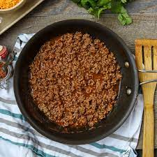

Taco Meat

Description
This recipe makes just the best taco meat. You have to buy everything else, of course.
Make a big batch.
Ingredients
- 1 pound of lean ground beef
- 1 teaspoon onion powder
- 1 teaspoon garlic powder
- 1 teaspoon celery salt
Steps
- Heat a large skillet over medium heat.
- Cook the beef.
- Season the beef.